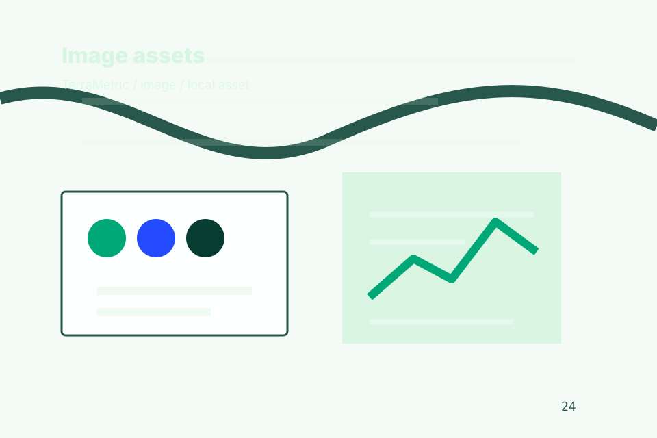

<!-- Source partial: Emissions dashboard hero. -->
<section id="section-hero" class="section hero-section hero-emissions-dashboard-hero composition-emissions-dashboard-hero" data-section="Hero" data-composition="Emissions dashboard hero" data-hero-type="Emissions dashboard hero" data-track="section_home_hero">
  <div class="container hero-grid">
    <div class="hero-copy">
      <p class="eyebrow">Environmental</p>
      <h1>Terra</h1>
      <p class="lead">Climate data operating system for accountability and measurable change.</p>
      <div class="button-row" aria-label="Terra primary actions">
        <a class="button primary" href="../contact.html" data-track="cta_home_hero">Book Audit</a>
        <a class="button secondary" href="#section-cta" data-track="secondary_home_hero">Explore</a>
      </div>
    </div>
    <figure class="hero-media premium-hero-picture">
      <picture>
        <source media="(max-width: 640px)" srcset="../assets/images/hero/environmental-home-hero-mobile.svg">
        <source media="(max-width: 1024px)" srcset="../assets/images/hero/environmental-home-hero-tablet.svg">
        
      </picture>
    </figure>
  </div>
</section>
